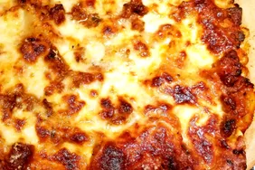

Lasagna

Best Lasagna Recipe
Listed below is an amazing recipe for delicous lasagna
Ingredients
- 1 pkg. oven ready lasagna noodles
- 2 lb. sweet italian sausage
- 2 lb. shredded mozzarella cheese
- 32 oz. part skim ricotta
- 2 cups marinara sauce
- 3 cloves garlic, minced
- 1 cup water
Steps
- Spray oil in bottom of 7 inch cake pan. Place some noodles in the bottom, breaking to size. Spoon on marinara sauce on top of noodles. Sprinkle cooked sausage and garlic on top.
- Scoop ricotta cheese on top of the meat and finish layer by covering with mozzarella cheese. Follow this for a second layer. Finish top with the remaining cheese.
- Pour the water in the bottom of instant pot, set lasagna on top. Place lid on the instant pot and select manual, pressure, high for 30 minutes. Let the pot finish the cycle and release air naturally. Let sit for 10 minutes and then serve.